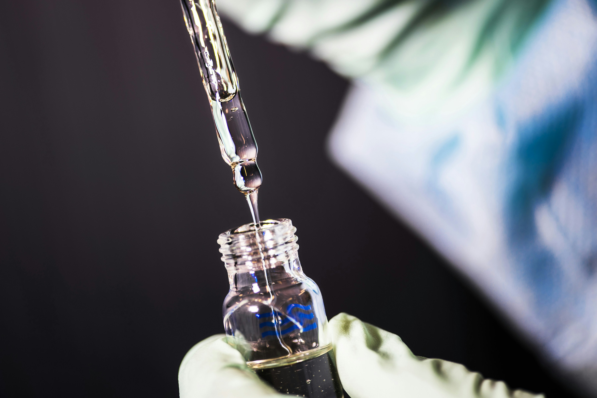

MEDLAB es un laboratorio clínico dedicado a ofrecer servicios de diagnóstico médico de alta calidad para la comunidad. Nuestro objetivo es proporcionar resultados precisos y oportunos que permitan a médicos y pacientes tomar decisiones informadas sobre su salud. Contamos con personal capacitado y equipos modernos que garantizan la confiabilidad de cada análisis realizado. Además, trabajamos bajo principios de responsabilidad, ética y compromiso con el bienestar de nuestros usuarios. Nuestro emprendimiento busca facilitar el acceso a exámenes clínicos esenciales, ofreciendo una atención cercana, profesional y eficiente. Gracias a nuestro horario extendido y a la variedad de pruebas disponibles, nos hemos convertido en una alternativa confiable para quienes buscan servicios médicos de calidad en la región.
